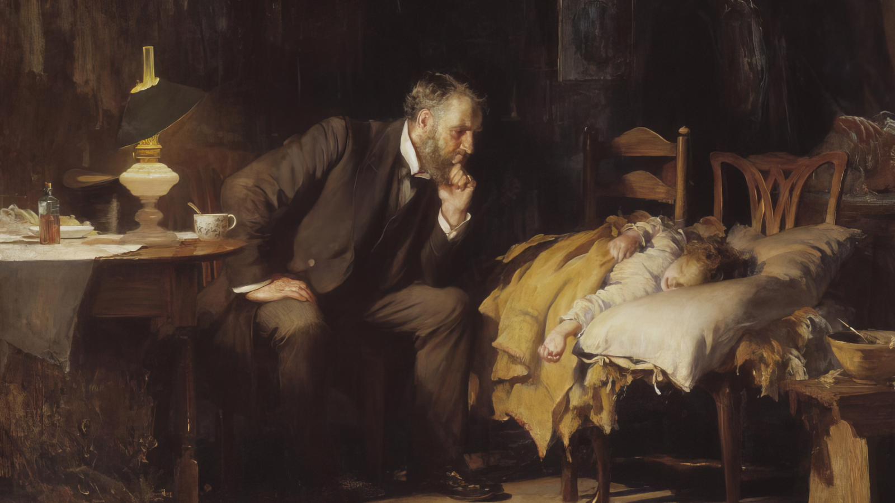

<!DOCTYPE html>
<html class="vc-ethics" style=""  data-theme="dark"  lang="en">
  <head>
    <title></title>
    <meta charset="UTF-8">
    <meta name="viewport" content="width=device-width"/>
    <meta name="robots" content="none"/>

            <link
    rel="stylesheet" href="https://use.typekit.net/lcy4nos.css"> <!-- Grunticon loader -->
    <script src="../../assets/icons/grunticon.loader.js"></script>
    <script>
      grunticon([
        "../../assets/icons/icons.data.svg.css", "../../assets/icons/icons.data.png.css", "../../assets/icons/icons.fallback.css"
      ], grunticon.svgLoadedCallback);
    </script>
    <noscript><link href="icons.fallback.css" rel="stylesheet"></noscript>

    <link rel="stylesheet" href="../../assets/css/styles.css?1717176704" media="all"/>
    <link rel="stylesheet" href="../../assets/css/pattern-scaffolding.css?1717176704" media="all"/>

    <link rel="apple-touch-icon" sizes="180x180" href="../../assets/favicons/apple-touch-icon.png"/>
    <link rel="icon" type="image/png" href="../../assets/favicons/favicon-32x32.png" sizes="32x32"/>
    <link rel="icon" type="image/png" href="../../assets/favicons/favicon-16x16.png" sizes="16x16"/>
    <link rel="manifest" href="../../assets/favicons/manifest.json"/>
    <link rel="mask-icon" href="../../assets/favicons/safari-pinned-tab.svg" color="#46166b"/>
    <meta
    name="theme-color" content="#ffffff"/>

    <!-- Begin Pattern Lab (Required for Pattern Lab to run properly) -->
    <!-- never cache patterns -->
<meta http-equiv="cache-control" content="max-age=0" />
<meta http-equiv="cache-control" content="no-cache" />
<meta http-equiv="expires" content="0" />
<meta http-equiv="expires" content="Tue, 01 Jan 1980 1:00:00 GMT" />
<meta http-equiv="pragma" content="no-cache" />

<link rel="stylesheet" href="../../styleguide/css/styleguide.min.css?1717176704" media="all">
<link rel="stylesheet" href="../../styleguide/css/prism-typeahead.min.css?1717176704" media="all" />
    <!-- End Pattern Lab -->

  </head>
  <body class=""></body>
</html>
<div class="vc-scroll-zoom">
  <div class="vc-scroll-zoom__image-container">
    <div class="vc-scroll-zoom__image">
      <div class="image-wrapper loading first static-display"
           data-section="static"
           data-coordinates-desktop="330 183 864 864"
           data-coordinates-tablet="193 114 1062 1062"
           data-coordinates-mobile="365 254 728 728"
           data-anchor="part-0"
      >
        <svg viewBox="330 183 864 864" x="100%" y="100%">
          <foreignObject style="overflow: visible; width: 100%; height: 100%">
            
          </foreignObject>
        </svg>
      </div>
    </div>
  </div>
  <div class="vc-scroll-zoom__captions vc-container">
          <div class="vc-scroll-zoom__caption
                part-1 section"
           data-section="dynamic"
           data-coordinates-desktop=""
           data-coordinates-tablet=""
           data-coordinates-mobile=""
           data-anchor="part-1"
      >
        <div class="vc-scroll-zoom__caption-desc vc-ethics-pattern">
          <p>One of the most recognized paintings of Western medicine, Luke Fildes’ The Doctor was hailed as an ideal representation of caring when it was first exhibited at the Royal Academy of Art in 1891. Henry Tate wanted an English painting worthy of a new gallery in his name, but he left the subject matter of his commission to Fildes.</p>
        </div>
      </div>
          <div class="vc-scroll-zoom__caption
        vc-scroll-zoom__caption--right        part-2 section"
           data-section="dynamic"
           data-coordinates-desktop="563 276 305 305"
           data-coordinates-tablet="341 240 743 743"
           data-coordinates-mobile="438 364 549 549"
           data-anchor="part-2"
      >
        <div class="vc-scroll-zoom__caption-desc vc-ethics-pattern">
          <p>As witness to a doctor’s care of his son who died of typhoid fever, Fildes wanted to put on record the status of the doctor.</p>
        </div>
      </div>
          <div class="vc-scroll-zoom__caption
                part-3 section"
           data-section="dynamic"
           data-coordinates-desktop="51 320 278 278"
           data-coordinates-tablet="101 341 186 186"
           data-coordinates-mobile="81 364 219 219"
           data-anchor="part-3"
      >
        <div class="vc-scroll-zoom__caption-desc vc-ethics-pattern">
          <p>Light has long symbolized hope and wisdom and a table lamp provides the primary illumination in this otherwise dimly lit scene. At first glance, the doctor and his young patient seem to be the only figures present.</p>
        </div>
      </div>
          <div class="vc-scroll-zoom__caption
        vc-scroll-zoom__caption--right        part-4 section"
           data-section="dynamic"
           data-coordinates-desktop="698 432 384 384"
           data-coordinates-tablet="578 452 619 619"
           data-coordinates-mobile="619 499 504 504"
           data-anchor="part-4"
      >
        <div class="vc-scroll-zoom__caption-desc vc-ethics-pattern">
          <p>Nearly centered in the painting, the child lies in a makeshift bed of 2 mismatched chairs. An outstretched left arm hangs over the pillow, signaling a certain precariousness of the moment. The doctor’s presence signals some hope that the child will recover.</p>
        </div>
      </div>
          <div class="vc-scroll-zoom__caption
        vc-scroll-zoom__caption--right        part-5 section"
           data-section="dynamic"
           data-coordinates-desktop="306 365 362 362"
           data-coordinates-tablet="337 398 363 363"
           data-coordinates-mobile="328 412 336 336"
           data-anchor="part-5"
      >
        <div class="vc-scroll-zoom__caption-desc vc-ethics-pattern">
          <p>Not sitting tiredly despite a night vigil, the doctor is illuminated in a forward-leaning position, chin in his hand. His stare is not a casual gaze, but one that is intensely and diagnostically trained on the child.</p>
        </div>
      </div>
          <div class="vc-scroll-zoom__caption
                part-6 section"
           data-section="dynamic"
           data-coordinates-desktop="306 22 330 330"
           data-coordinates-tablet="337 103 363 363"
           data-coordinates-mobile="328 68 336 336"
           data-anchor="part-6"
      >
        <div class="vc-scroll-zoom__caption-desc vc-ethics-pattern">
          <p>A fisherman’s net hardly visible in the rafters represents manual labor, presumably a means by which the father of the child supports his family. This labor is juxtaposed to the doctor’s intellectual and professional work, which apparently supersedes the power of manual labor and that of the child’s parents.</p>
        </div>
      </div>
          <div class="vc-scroll-zoom__caption
        vc-scroll-zoom__caption--right        part-7 section"
           data-section="dynamic"
           data-coordinates-desktop="859 148 390 390"
           data-coordinates-tablet="754 178 538 538"
           data-coordinates-mobile="803 210 459 459"
           data-anchor="part-7"
      >
        <div class="vc-scroll-zoom__caption-desc vc-ethics-pattern">
          <p>The child’s parents recede into the background, reinforcing their helplessness to affect their child’s fate. A dawn light filtering through the window reveals the father comforting the mother, casting further uncertainty on their child’s immediate future.</p>
        </div>
      </div>
          <div class="vc-scroll-zoom__caption
                part-8 section"
           data-section="dynamic"
           data-coordinates-desktop="352 335 653 653"
           data-coordinates-tablet="216 145 942 942"
           data-coordinates-mobile="335 348 611 611"
           data-anchor="part-8"
      >
        <div class="vc-scroll-zoom__caption-desc vc-ethics-pattern">
          <p>Despite the painting’s depiction, a doctor’s presence in a working-class home is more idealized than reality. During the Victorian era, such house calls were generally afforded to those with wealth and power.</p>
        </div>
      </div>
          <div class="vc-scroll-zoom__caption
                part-9 section"
           data-section="dynamic"
           data-coordinates-desktop="-41 471 210 210"
           data-coordinates-tablet="10 479 185 185"
           data-coordinates-mobile="21 504 122 122"
           data-anchor="part-9"
      >
        <div class="vc-scroll-zoom__caption-desc vc-ethics-pattern">
          <p>Prior paintings of the ill at home also never depicted a medical practitioner with a bottle of medicine, which was previously associated with only familial caregivers.<sup>4</sup></p>
        </div>
      </div>
          <div class="vc-scroll-zoom__caption
        vc-scroll-zoom__caption--right        part-10 section"
           data-section="dynamic"
           data-coordinates-desktop="670 836 248 248"
           data-coordinates-tablet="566 837 337 337"
           data-coordinates-mobile="619 795 325 325"
           data-anchor="part-10"
      >
        <div class="vc-scroll-zoom__caption-desc vc-ethics-pattern">
          <p>On the floor, 2 fragments of paper are probably the filled prescription for the medicine.<sup>5</sup> The torn and crumpled prescription suggests that the medicine has been dispensed, but its effect remains an open question.</p>
        </div>
      </div>
      </div>
</div>
<!--DO NOT REMOVE-->
<script type="text/json" id="sg-pattern-data-footer" class="sg-pattern-data">
  {"cssEnabled":false,"lineage":[],"lineageR":[{"lineagePattern":"pages-vc-ethics-dark","lineagePath":"..\/..\/patterns\/05-pages-vc-ethics-dark\/05-pages-vc-ethics-dark.html"},{"lineagePattern":"pages-vc-ethics-light","lineagePath":"..\/..\/patterns\/05-pages-vc-ethics-light\/05-pages-vc-ethics-light.html"}],"patternBreadcrumb":{"patternType":"organisms","patternSubtype":"vc scroll zoom"},"patternDesc":"","patternExtension":"twig","patternName":"vc scroll zoom","patternPartial":"organisms-vc-scroll-zoom","patternState":"","extraOutput":[]}
</script>

<script>
  /*!
  * scriptLoader - v0.1
  *
  * Copyright (c) 2014 Dave Olsen, http://dmolsen.com
  * Licensed under the MIT license
  *
  */
  
  var scriptLoader = {
    run: function(js,cb,target) {
      var s  = document.getElementById(target+'-'+cb);
      for (var i = 0; i < js.length; i++) {
        var src = (typeof js[i] != 'string') ? js[i].src : js[i];
        var c   = document.createElement('script');
        c.src   = '../../'+src+'?'+cb;
        if (typeof js[i] != 'string') {
          if (js[i].dep !== undefined) {
            c.onload = function(dep,cb,target) {
              return function() {
                scriptLoader.run(dep,cb,target);
              }
            }(js[i].dep,cb,target);
          }
        }
        s.parentNode.insertBefore(c,s);
      }
    }
  }
</script>

<script id="pl-js-polyfill-insert-1717176704">
  (function() {
    if (self != top) {
      var cb = '1717176704';
      var js = [];
      if (typeof document !== 'undefined' && !('classList' in document.documentElement)) {
        js.push('styleguide/bower_components/classList.min.js');
      }
      scriptLoader.run(js,cb,'pl-js-polyfill-insert');
    }
  })();
</script>

<script id="pl-js-insert-1717176704">
  (function() {
    if (self != top) {
      var cb = '1717176704';
      var js = [ { 'src': 'styleguide/bower_components/jwerty.min.js', 'dep': [ 'styleguide/js/patternlab-pattern.min.js' ] } ];
      scriptLoader.run(js,cb,'pl-js-insert');
    }
  })();
</script>
<script src="../../assets/js/jquery-3.2.1.js"></script>
<script src="../../assets/js/drupal-attach-behaviors.js"></script>
<script src="../../assets/js/jquery.validate.js"></script>
<script src="../../assets/js/slick.min.js"></script>
<script src="../../assets/js/micromodal.min.js"></script>
<script src="../../assets/js/BeerSlider.unmin.js"></script>
<script src="../../assets/js/vendor/gsap.min.js"></script>
<script src="../../assets/js/nav.js"></script>
<script src="../../assets/js/tool-drawer.js"></script>
<script src="../../assets/js/chosen.jquery.min.js"></script>
<script src="../../assets/js/filters.js"></script>
<script src="../../assets/js/sticky-share.js"></script>
<script src="../../assets/js/issueFilters.js"></script>
<script src="../../assets/js/poll-reveal.js"></script>
<script src="../../assets/js/lightbox.js"></script>
<script src="../../assets/js/resource-tooltips.js"></script>
<script src="../../assets/js/vc-page.js"></script>
<script src="../../assets/js/vc-header.js"></script>
<script src="../../assets/js/vc-hero.js"></script>
<script src="../../assets/js/vc-scroll-zoom.js"></script>
<script src="../../assets/js/vc-reaction-bar.js"></script>
<script src="../../assets/js/vc-video-tabs.js"></script>
<script src="../../assets/js/vc-slide-rule.js"></script>
<script src="../../assets/js/vc-hero-gallery.js"></script>
<script src="../../assets/js/vc-horizontal-gallery.js"></script>
<script src="../../assets/js/vc-audio-player.js"></script>
<script src="../../assets/js/vc-featured-audio-visuals.min.js"></script>
<script src="../../assets/js/vc-is-zoomed.js"></script>
<script src="../../assets/js/vc-featured-audio.js"></script>
<script src="../../assets/js/vc-back-to.js"></script>
<script src="../../assets/js/modernizr-custom.js"></script></body></html>
